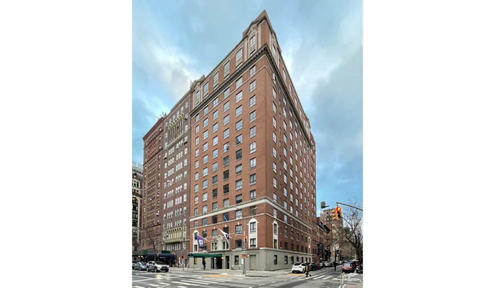

NYU Community
Rubin Hall
역사 깊은 고전적 건축 양식과 최근 리노베이션이 공존하는 기숙사

특징
📍 35 5th Avenue에 위치, 캠퍼스 중심에서 도보 5분
🏢 17층 건물, 약 680명의 1학년 수용
🏨 1920년대 호텔 → 1964년 NYU 기숙사 전환
🔧 2024년 가구 전면 교체 및 에어컨 설치
✅ 장점: 저렴한 가격, 비교적 넓은 방
⚠️ 단점: 오래된 구조, 카페테리아 음식 퀄리티 낮음
👍
← 메인으로 돌아가기